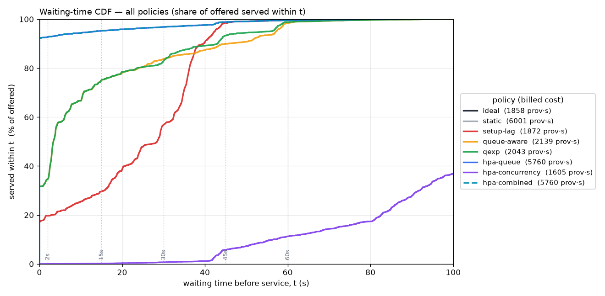
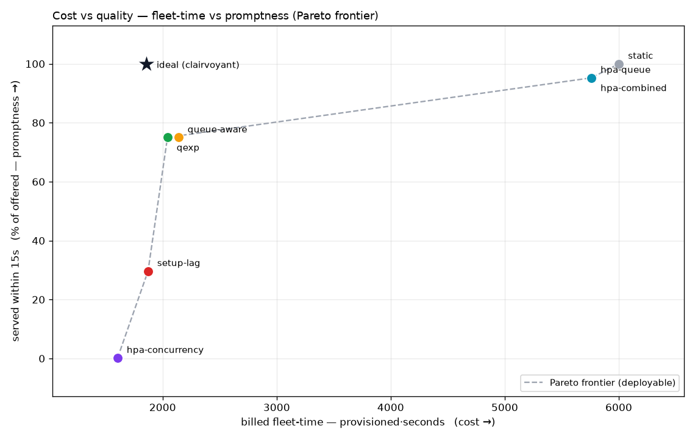
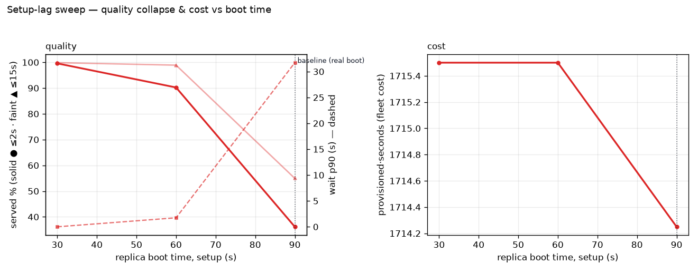
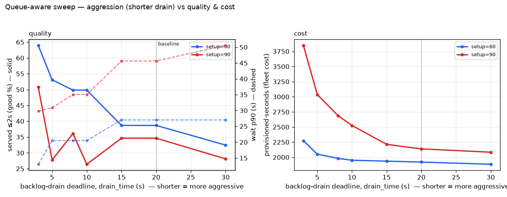
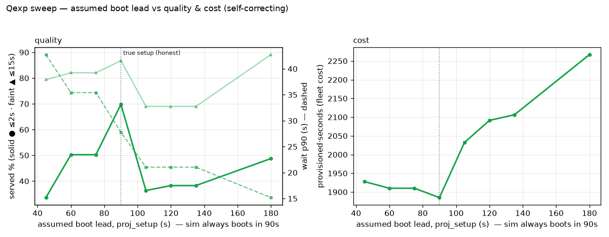
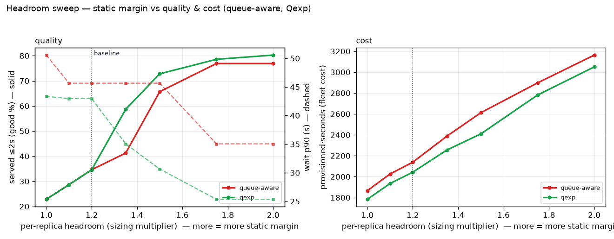
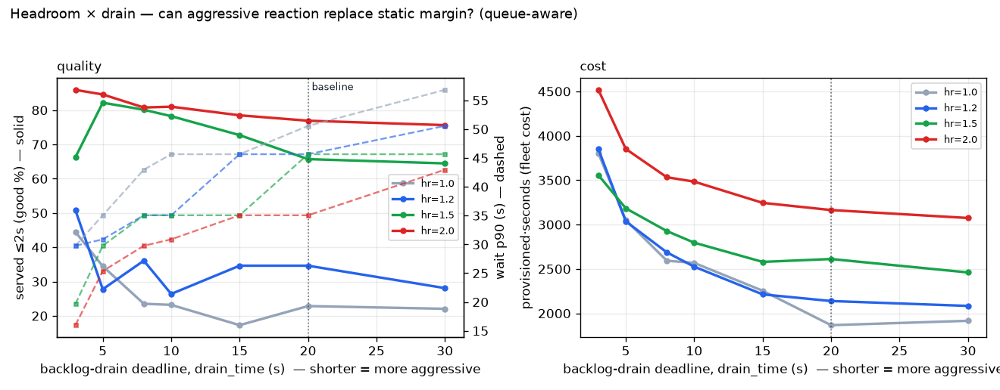
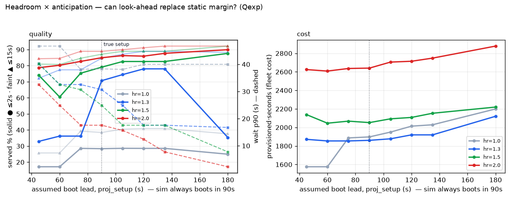

latency — per-request time in system (coloured by request size):
Readings: the ideal clairvoyant sizer is the only one that sees future arrivals — 100% prompt at the lowest real cost, the reference everything else is measured against. No scaling is also 100% prompt but pins at the max and burns ~3× the ideal fleet at the lowest utilisation — promptness bought by paying for peak through every valley. Setup-lag → queue-aware → Qexp is the deployable-sizer progression under 90s boot: a correct policy landing 90s late is only ~20% prompt; a reactive backlog term (queue-aware, tuned to drain_time=20) lifts that to ~35% but still worsens the tail (it chases the queue after the pile-up); Qexp — the anticipatory periodic loop that sizes to the projected backlog peak — matches that ~35% prompt rate but gets there CHEAPER and with a shorter tail (p90 43s vs 46s) and a lower queue peak, at LOWER fleet cost. hpa-queue and hpa-combined are prompt (~93% good) at ~2.6× the ideal fleet. hpa-concurrency is catastrophic — 88% wait over a minute — because its signal is capacity-capped and blind to the queue. hpa-combined = hpa-queue: the queue trigger dominates the KEDA max, rescuing concurrency's blind spot.
| metric | ideal | static | setup-lag | queue-aware | qexp | hpa-queue | hpa-concurrency | hpa-combined | what it means |
|---|---|---|---|---|---|---|---|---|---|
| Volume & completion | |||||||||
| offered | 7159 | 7159 | 7159 | 7159 | 7159 | 7159 | 7159 | 7159 | every request that arrived — the denominator (guards against survivorship bias) |
| completed | 7159 | 7159 | 7159 | 7159 | 7159 | 7159 | 7159 | 7159 | requests that finished within the run |
| completed % | 100.0 | 100.0 | 100.0 | 100.0 | 100.0 | 100.0 | 100.0 | 100.0 | completion rate — the 'did it finish at all' number |
| unfinished | 0 | 0 | 0 | 0 | 0 | 0 | 0 | 0 | still in system at trace end (permanently stranded) |
| Waiting-time quality mix — cumulative % of offered served within | |||||||||
| ≤2s % | 100.0 | 100.0 | 19.7 | 34.6 | 34.6 | 92.7 | 0.0 | 92.7 | cumulative — share of ALL offered served within this wait (the wait CDF sampled at this bound; rows climb toward 100%) |
| ≤15s % | 100.0 | 100.0 | 29.7 | 75.0 | 75.0 | 95.2 | 0.2 | 95.2 | cumulative — share of ALL offered served within this wait (the wait CDF sampled at this bound; rows climb toward 100%) |
| ≤30s % | 100.0 | 100.0 | 56.8 | 83.7 | 82.9 | 96.8 | 0.7 | 96.8 | cumulative — share of ALL offered served within this wait (the wait CDF sampled at this bound; rows climb toward 100%) |
| ≤45s % | 100.0 | 100.0 | 98.4 | 89.9 | 93.3 | 98.8 | 5.8 | 98.8 | cumulative — share of ALL offered served within this wait (the wait CDF sampled at this bound; rows climb toward 100%) |
| ≤60s % | 100.0 | 100.0 | 99.6 | 98.4 | 98.8 | 99.6 | 11.3 | 99.6 | cumulative — share of ALL offered served within this wait (the wait CDF sampled at this bound; rows climb toward 100%) |
| failed (>60s) % | 0.0 | 0.0 | 0.4 | 1.6 | 1.2 | 0.4 | 88.7 | 0.4 | finished but slower than the last band edge — the slow tail on the OFFERED denominator (completed % − last ≤Ns %); unfinished requests are counted separately in the row above |
| Waiting time before service (s) | |||||||||
| wait avg (s) | 0.0 | 0.0 | 23.3 | 12.5 | 11.9 | 2.0 | 106.9 | 2.0 | pre-service wait (dispatch − arrival), completed requests only |
| wait p50 (s) | 0.0 | 0.0 | 28.5 | 3.4 | 3.4 | 0.0 | 116.5 | 0.0 | pre-service wait (dispatch − arrival), completed requests only |
| wait p75 (s) | 0.0 | 0.0 | 35.7 | 15.0 | 15.0 | 0.0 | 131.5 | 0.0 | pre-service wait (dispatch − arrival), completed requests only |
| wait p90 (s) | 0.0 | 0.0 | 39.6 | 45.7 | 43.0 | 0.0 | 140.7 | 0.0 | pre-service wait (dispatch − arrival), completed requests only |
| wait p95 (s) | 0.0 | 0.0 | 42.4 | 57.2 | 55.4 | 13.2 | 143.2 | 13.2 | pre-service wait (dispatch − arrival), completed requests only |
| wait p99 (s) | 0.0 | 0.0 | 47.4 | 62.4 | 62.4 | 47.4 | 145.1 | 47.4 | pre-service wait (dispatch − arrival), completed requests only |
| Time per work unit (s/unit) — informational, not scored | |||||||||
| time/work avg (s/u) | 0.01 | 0.01 | 0.27 | 0.15 | 0.14 | 0.02 | 1.18 | 0.02 | time-in-system ÷ size — a slowdown proxy; informational only, NOT the scored signal (the bands score absolute wait, so short and long requests are held to the same 'promptly served' bar) |
| time/work p50 (s/u) | 0.01 | 0.01 | 0.04 | 0.02 | 0.02 | 0.01 | 0.16 | 0.01 | time-in-system ÷ size — a slowdown proxy; informational only, NOT the scored signal (the bands score absolute wait, so short and long requests are held to the same 'promptly served' bar) |
| time/work p90 (s/u) | 0.01 | 0.01 | 0.24 | 0.12 | 0.11 | 0.01 | 1.05 | 0.01 | time-in-system ÷ size — a slowdown proxy; informational only, NOT the scored signal (the bands score absolute wait, so short and long requests are held to the same 'promptly served' bar) |
| time/work p95 (s/u) | 0.01 | 0.01 | 0.49 | 0.28 | 0.26 | 0.03 | 2.18 | 0.03 | time-in-system ÷ size — a slowdown proxy; informational only, NOT the scored signal (the bands score absolute wait, so short and long requests are held to the same 'promptly served' bar) |
| time/work p99 (s/u) | 0.01 | 0.01 | 2.80 | 1.52 | 1.49 | 0.23 | 13.24 | 0.23 | time-in-system ÷ size — a slowdown proxy; informational only, NOT the scored signal (the bands score absolute wait, so short and long requests are held to the same 'promptly served' bar) |
| Fleet & cost | |||||||||
| replicas avg | 3.10 | 10.00 | 2.37 | 2.64 | 2.63 | 8.10 | 1.97 | 8.10 | ready replica count over the run |
| replicas std | 1.43 | 0.12 | 1.54 | 1.66 | 1.62 | 3.83 | 1.29 | 3.83 | ready replica count over the run |
| replicas max | 5 | 10 | 5 | 5 | 5 | 10 | 4 | 10 | ready replica count over the run |
| replica·seconds | 1858 | 6001 | 1422 | 1584 | 1578 | 4860 | 1185 | 4860 | ∫ READY replicas dt (accepting fleet only) — the usable-cost proxy |
| provisioned·seconds | 1858 | 6001 | 1872 | 2139 | 2043 | 5760 | 1605 | 5760 | ∫ ALL billed replicas dt (booting + accepting + draining) — total fleet-time you pay for |
| boot-lag waste·s | 0 | 0 | 450 | 555 | 465 | 900 | 420 | 900 | provisioned − ready replica·seconds: capacity billed while booting or draining, never serving |
| utilization | 0.66 | 0.20 | 0.86 | 0.77 | 0.78 | 0.25 | 1.04 | 0.25 | delivered work ÷ usable capacity paid for; <1 idle fleet, ~1+ packed (packed can still fail latency — read next to the % bands) |
Cross-policy tradeoffs — the two views that put every policy on one shared axis: the full waiting-time CDF (how prompt), and the cost vs quality frontier (what the promptness costs). Unlike the per-scenario figures under Browse, these compare policies directly.
Waiting-time CDF — all policies on one axis
Each curve is a policy's wait CDF over the OFFERED denominator: height at time t = share of all arrivals served within t s. Curves that asymptote below 100% stranded work (unfinished). Read left-to-right: the further up-and-left, the prompter. Legend carries each policy's billed fleet-cost, so promptness and cost read together. This is the same data as the Table's “≤Ns %” rows, shown continuously.

open full size ↗Cost vs quality — the Pareto frontier
x = billed fleet-time (provisioned·seconds, the cost); y = promptness (% of offered served within 15s). The dashed line is the frontier over the deployable policies — anything below-and-right of it is dominated (something is both cheaper AND prompter). ideal is drawn apart as the clairvoyant reference (not deployable). This is where “same cost, better quality” becomes literal: Qexp sits on the frontier; queue-aware is now dominated by it (same ≤15s% at higher cost — its own drain retune closed the quality gap but not the cost gap).

open full size ↗Parameter sweeps — trend + calibration figures and tables (not the seven canonical scenario figures). Each point re-runs the sim across a knob grid; a point at the baseline knobs reproduces the matching scenario's summary row. In the plots, solid = good % (left axis), dashed = wait p90 (right axis), and the dotted vertical is the baseline. In the tables * marks the canonical baseline; metric cells are shaded best→green / worst→red down each column.
Metrics per run: good% (≤2s, pinned), failed% (>60s, pinned), wait_p90 (s), rep_max (peak fleet), rep·s (usable replica-seconds), prov·s (billed incl. boot/drain), util (delivered ÷ usable capacity paid for). * = each section's own canonical baseline (setup=90; drain=20 for queue-aware, drain=30 for Qexp — the two sizers do NOT share one canonical drain_time, see the queue-aware section's own note).
setup-lag — setup (boot lag) sweep

Clairvoyant demand-tracking commands landing setup s late. Isolates boot lag alone (no backlog term). Context: setup=90 is the real boot time; the point is that it is where quality collapses.
| setup | good% | failed% | wait_p90 | rep_max | rep·s | prov·s | util |
|---|---|---|---|---|---|---|---|
| 30 | 99.6 | 0.0 | 0.0 | 5 | 1709 | 1859 | 0.72 |
| 60 | 58.7 | 0.0 | 9.6 | 5 | 1537 | 1837 | 0.80 |
| 90* | 19.7 | 0.4 | 39.6 | 5 | 1422 | 1872 | 0.86 |
queue-aware — drain_time aggression curve (setup 60 vs 90)

Reactive backlog-drain sizer, NO upper cap. drain_time is the deadline to clear the current queue; shorter → size for more replicas. But it has no dead-time compensation, so replicas ordered still boot setup s late — watch whether aggression buys good% or just prov·s (boot-lag waste).
| setup | drain | good% | failed% | wait_p90 | rep_max | rep·s | prov·s | util |
|---|---|---|---|---|---|---|---|---|
| 60 | 3 | 64.0 | 0.1 | 13.0 | 5 | 1688 | 2274 | 0.73 |
| 60 | 5 | 53.1 | 0.1 | 20.5 | 5 | 1632 | 2052 | 0.75 |
| 60 | 8 | 49.8 | 0.1 | 20.5 | 5 | 1636 | 1981 | 0.75 |
| 60 | 10 | 49.8 | 0.1 | 20.5 | 5 | 1636 | 1951 | 0.75 |
| 60 | 15 | 38.7 | 0.1 | 27.0 | 5 | 1606 | 1936 | 0.76 |
| 60 | 20* | 38.7 | 0.1 | 27.0 | 5 | 1606 | 1921 | 0.76 |
| 60 | 30 | 32.4 | 0.1 | 27.0 | 5 | 1584 | 1884 | 0.77 |
| 90* | 3 | 50.8 | 1.2 | 29.8 | 6 | 1689 | 3849 | 0.73 |
| 90* | 5 | 27.8 | 1.2 | 30.9 | 5 | 1551 | 3036 | 0.79 |
| 90* | 8 | 36.1 | 1.2 | 35.1 | 5 | 1592 | 2687 | 0.77 |
| 90* | 10 | 26.4 | 1.2 | 35.1 | 5 | 1551 | 2526 | 0.79 |
| 90* | 15 | 34.6 | 1.6 | 45.7 | 5 | 1584 | 2214 | 0.77 |
| 90* | 20* | 34.6 | 1.6 | 45.7 | 5 | 1584 | 2139 | 0.77 |
| 90* | 30 | 28.1 | 1.6 | 50.6 | 5 | 1544 | 2084 | 0.79 |
qexp — proj_setup dial (sim boots in 90s regardless)

Anticipatory Qexp sizing to the projected backlog peak. proj_setup is the boot lead the projection ASSUMES; the sim always applies setup=90. Under-predict (<90) → anticipates less, drifts toward reactive; over-predict (>90) → orders earlier, trades a little cost for tail latency. Stable and self-correcting across the range. * = true setup.
| proj_setup | good% | failed% | wait_p90 | rep_max | rep·s | prov·s | util |
|---|---|---|---|---|---|---|---|
| 45 | 28.1 | 1.6 | 50.6 | 5 | 1544 | 2084 | 0.79 |
| 60 | 28.1 | 1.6 | 50.6 | 5 | 1544 | 2084 | 0.79 |
| 75 | 29.8 | 1.2 | 43.4 | 5 | 1568 | 2063 | 0.78 |
| 90* | 34.6 | 1.2 | 43.0 | 5 | 1578 | 2043 | 0.78 |
| 105 | 25.2 | 1.2 | 35.1 | 5 | 1527 | 2157 | 0.80 |
| 120 | 26.8 | 1.2 | 30.7 | 5 | 1543 | 2158 | 0.80 |
| 135 | 28.3 | 1.2 | 25.4 | 5 | 1557 | 2202 | 0.79 |
| 180 | 31.7 | 1.2 | 25.4 | 6 | 1593 | 2313 | 0.77 |
headroom — static per-replica margin (queue-aware vs Qexp)

Static margin dial (§2.6) at the real 90s boot (qaware at its own tuned drain=20; qexp at drain=30 — see the module note on why they differ). More headroom = more replicas = fewer requests per pod = shorter queue = less wait, monotonically, for more prov·s. This is headroom's CAPACITY role; its §2.7 speed role does not appear on the wait metric (see ρ note below). * = canonical baseline (1.2).
| sizer | headroom | good% | failed% | wait_p90 | rep_max | rep·s | prov·s | util |
|---|---|---|---|---|---|---|---|---|
| qaware | 1.0 | 22.9 | 1.6 | 50.6 | 4 | 1432 | 1867 | 0.86 |
| qaware | 1.1 | 28.7 | 1.6 | 45.7 | 4 | 1516 | 2026 | 0.81 |
| qaware | 1.2* | 34.6 | 1.6 | 45.7 | 5 | 1584 | 2139 | 0.77 |
| qaware | 1.35 | 41.2 | 1.6 | 45.7 | 5 | 1712 | 2387 | 0.72 |
| qaware | 1.5 | 65.7 | 1.6 | 45.7 | 6 | 1862 | 2612 | 0.66 |
| qaware | 1.75 | 76.9 | 1.2 | 35.1 | 7 | 2162 | 2898 | 0.57 |
| qaware | 2.0 | 76.9 | 1.2 | 35.1 | 7 | 2264 | 3164 | 0.54 |
| qexp | 1.0 | 22.9 | 1.2 | 43.4 | 4 | 1424 | 1784 | 0.86 |
| qexp | 1.1 | 28.7 | 1.2 | 43.0 | 4 | 1515 | 1935 | 0.81 |
| qexp | 1.2* | 34.6 | 1.2 | 43.0 | 5 | 1578 | 2043 | 0.78 |
| qexp | 1.35 | 58.7 | 1.2 | 35.1 | 5 | 1730 | 2255 | 0.71 |
| qexp | 1.5 | 72.8 | 1.2 | 30.7 | 6 | 1870 | 2410 | 0.66 |
| qexp | 1.75 | 78.6 | 1.2 | 25.4 | 7 | 2106 | 2781 | 0.58 |
| qexp | 2.0 | 80.3 | 1.2 | 25.4 | 7 | 2300 | 3050 | 0.53 |
headroom × drain_time (queue-aware) — static margin vs dynamic aggression

2-D: static per-replica margin (headroom) against the reactive backlog aggression lever (shorter drain_time = order more to clear faster). Where a leaner (low-headroom) line reaches a fatter line's good%, aggression has substituted for static margin — at its own boot-lag cost. setup=90.
| headroom | drain | good% | failed% | wait_p90 | rep_max | rep·s | prov·s | util |
|---|---|---|---|---|---|---|---|---|
| 1.0 | 3 | 44.5 | 1.2 | 29.8 | 7 | 1568 | 3802 | 0.78 |
| 1.0 | 5 | 34.5 | 1.2 | 35.1 | 6 | 1536 | 3051 | 0.80 |
| 1.0 | 8 | 23.5 | 1.2 | 43.0 | 6 | 1498 | 2593 | 0.82 |
| 1.0 | 10 | 23.2 | 1.6 | 45.7 | 6 | 1533 | 2568 | 0.80 |
| 1.0 | 15 | 17.3 | 1.6 | 45.7 | 5 | 1475 | 2255 | 0.83 |
| 1.0 | 20* | 22.9 | 1.6 | 50.6 | 4 | 1432 | 1867 | 0.86 |
| 1.0 | 30 | 22.1 | 3.5 | 56.8 | 5 | 1466 | 1916 | 0.84 |
| 1.2* | 3 | 50.8 | 1.2 | 29.8 | 6 | 1689 | 3849 | 0.73 |
| 1.2* | 5 | 27.8 | 1.2 | 30.9 | 5 | 1551 | 3036 | 0.79 |
| 1.2* | 8 | 36.1 | 1.2 | 35.1 | 5 | 1592 | 2687 | 0.77 |
| 1.2* | 10 | 26.4 | 1.2 | 35.1 | 5 | 1551 | 2526 | 0.79 |
| 1.2* | 15 | 34.6 | 1.6 | 45.7 | 5 | 1584 | 2214 | 0.77 |
| 1.2* | 20* | 34.6 | 1.6 | 45.7 | 5 | 1584 | 2139 | 0.77 |
| 1.2* | 30 | 28.1 | 1.6 | 50.6 | 5 | 1544 | 2084 | 0.79 |
| 1.5 | 3 | 66.2 | 1.2 | 19.6 | 6 | 1847 | 3557 | 0.66 |
| 1.5 | 5 | 82.2 | 1.2 | 29.8 | 6 | 1923 | 3183 | 0.64 |
| 1.5 | 8 | 80.1 | 1.2 | 35.1 | 6 | 1922 | 2927 | 0.64 |
| 1.5 | 10 | 78.2 | 1.2 | 35.1 | 6 | 1911 | 2796 | 0.64 |
| 1.5 | 15 | 72.7 | 1.2 | 35.1 | 6 | 1844 | 2580 | 0.67 |
| 1.5 | 20* | 65.7 | 1.6 | 45.7 | 6 | 1862 | 2612 | 0.66 |
| 1.5 | 30 | 64.5 | 1.6 | 45.7 | 6 | 1876 | 2461 | 0.65 |
| 2.0 | 3 | 85.9 | 1.2 | 16.0 | 7 | 2282 | 4517 | 0.54 |
| 2.0 | 5 | 84.6 | 1.2 | 25.4 | 7 | 2352 | 3852 | 0.52 |
| 2.0 | 8 | 80.8 | 1.2 | 29.8 | 7 | 2288 | 3533 | 0.54 |
| 2.0 | 10 | 81.0 | 1.2 | 30.9 | 7 | 2313 | 3483 | 0.53 |
| 2.0 | 15 | 78.5 | 1.2 | 35.1 | 7 | 2254 | 3244 | 0.54 |
| 2.0 | 20* | 76.9 | 1.2 | 35.1 | 7 | 2264 | 3164 | 0.54 |
| 2.0 | 30 | 75.6 | 1.2 | 43.0 | 7 | 2234 | 3074 | 0.55 |
headroom × proj_setup (Qexp) — static margin vs dynamic anticipation

2-D: static per-replica margin (headroom) against anticipation (assumed boot lead; sim always boots in 90s). More anticipation orders earlier, so a lean fleet can hold a fatter fleet's quality — anticipation substituting for margin. * proj_setup = true 90s setup.
| headroom | proj_setup | good% | failed% | wait_p90 | rep_max | rep·s | prov·s | util |
|---|---|---|---|---|---|---|---|---|
| 1.0 | 45 | 22.1 | 3.5 | 56.8 | 5 | 1466 | 1916 | 0.84 |
| 1.0 | 60 | 22.1 | 3.5 | 56.8 | 5 | 1466 | 1916 | 0.84 |
| 1.0 | 75 | 20.0 | 1.6 | 50.6 | 4 | 1434 | 1808 | 0.86 |
| 1.0 | 90* | 22.9 | 1.2 | 43.4 | 4 | 1424 | 1784 | 0.86 |
| 1.0 | 105 | 12.0 | 1.2 | 43.0 | 5 | 1409 | 2024 | 0.87 |
| 1.0 | 120 | 19.7 | 1.2 | 35.5 | 5 | 1446 | 2046 | 0.85 |
| 1.0 | 135 | 21.9 | 1.2 | 32.2 | 5 | 1446 | 2030 | 0.85 |
| 1.0 | 180 | 25.2 | 1.2 | 27.9 | 5 | 1463 | 2168 | 0.84 |
| 1.2* | 45 | 28.1 | 1.6 | 50.6 | 5 | 1544 | 2084 | 0.79 |
| 1.2* | 60 | 28.1 | 1.6 | 50.6 | 5 | 1544 | 2084 | 0.79 |
| 1.2* | 75 | 29.8 | 1.2 | 43.4 | 5 | 1568 | 2063 | 0.78 |
| 1.2* | 90* | 34.6 | 1.2 | 43.0 | 5 | 1578 | 2043 | 0.78 |
| 1.2* | 105 | 25.2 | 1.2 | 35.1 | 5 | 1527 | 2157 | 0.80 |
| 1.2* | 120 | 26.8 | 1.2 | 30.7 | 5 | 1543 | 2158 | 0.80 |
| 1.2* | 135 | 28.3 | 1.2 | 25.4 | 5 | 1557 | 2202 | 0.79 |
| 1.2* | 180 | 31.7 | 1.2 | 25.4 | 6 | 1593 | 2313 | 0.77 |
| 1.5 | 45 | 64.5 | 1.6 | 45.7 | 6 | 1876 | 2461 | 0.65 |
| 1.5 | 60 | 58.7 | 1.2 | 43.0 | 6 | 1831 | 2446 | 0.67 |
| 1.5 | 75 | 58.7 | 1.2 | 43.0 | 6 | 1831 | 2446 | 0.67 |
| 1.5 | 90* | 72.8 | 1.2 | 30.7 | 6 | 1870 | 2410 | 0.66 |
| 1.5 | 105 | 78.6 | 1.2 | 25.4 | 6 | 1887 | 2427 | 0.65 |
| 1.5 | 120 | 80.3 | 1.2 | 25.4 | 6 | 1902 | 2457 | 0.65 |
| 1.5 | 135 | 80.3 | 1.2 | 25.4 | 6 | 1902 | 2472 | 0.65 |
| 1.5 | 180 | 66.2 | 1.2 | 19.6 | 6 | 1869 | 2589 | 0.66 |
| 2.0 | 45 | 75.6 | 1.2 | 43.0 | 7 | 2234 | 3074 | 0.55 |
| 2.0 | 60 | 75.6 | 1.2 | 43.0 | 7 | 2234 | 3074 | 0.55 |
| 2.0 | 75 | 78.5 | 1.2 | 30.7 | 7 | 2256 | 3021 | 0.54 |
| 2.0 | 90* | 80.3 | 1.2 | 25.4 | 7 | 2300 | 3050 | 0.53 |
| 2.0 | 105 | 81.9 | 1.2 | 25.4 | 7 | 2309 | 3074 | 0.53 |
| 2.0 | 120 | 83.0 | 1.2 | 19.6 | 7 | 2229 | 3099 | 0.55 |
| 2.0 | 135 | 84.8 | 1.2 | 15.7 | 7 | 2234 | 3119 | 0.55 |
| 2.0 | 180 | 86.4 | 1.2 | 15.2 | 7 | 2251 | 3166 | 0.55 |
ρ note — why the §2.7 speed-up does not show in these sweeps
All sweeps run at the canonical RHO = 2 (empty pods decode ~2× faster than packed ones, §2.7). Yet good% / wait_p90 are identical to a RHO = 1 run at every headroom, and only prov·s shifts (a slightly shorter drain tail). The reason is structural: the quality bands key on waiting time (arrival→service-start), and whenever a backlog exists the router keeps every pod packed at usable_C (k≈1), where rate = service_rate — exactly the fixed-rate value. The decode speed-up only fires when a pod is under-full (k<1), which is precisely when there is no queue and wait≈0 already. So on the wait metric, headroom buys capacity/slack, not speed; the §2.7 speed benefit is a service-latency effect (visible in time/work, not plotted here). This refines the 7(b) framing — see the design doc §2.7 / §8.1(7b).
- range vs interval
- A range is a lookback span (how far back a windowed average reaches, PromQL
metric[5m]); an interval is a cadence (how often something recomputes/samples). Independent: average over 60s, decide every 15s. - the three meanings of “rate”
- service_rate = tokens/s one in-service request advances at (a backend property, fixed). DR (demand rate) = arrival_rate × E[size], tokens/s — a demand ESTIMATE, not a measurement. measured throughput = observed arrival/departure counts per second. Three different quantities the word “rate” gets loosely attached to; only measured throughput is one you actually observe directly.
- DR — demand rate (was OWR)
- DR(t) = arrival_rate(t) × E[size], in tokens/s — the offered work rate, not requests/s (each request's work/size varies, so demand is measured in tokens). An estimate, not a measurement: arrival count is observable but a request's work (size) is not known at arrival. Valid as a proxy only under the stationary-shape assumption — arrival rate varies over time, the size distribution does not. (Named
owrin the code / trace files.) - C / sat_frac / usable ceiling
- C = raw per-backend concurrency limit (100 here). sat_frac = usable fraction (0.7); a backend saturates at the usable ceiling ⌊sat_frac·C⌋ = 70 concurrent, a flat stand-in for the way real serving (vLLM) stops gaining goodput as concurrency climbs. Usable per-backend throughput = ⌊sat_frac·C⌋ × service_rate.
- headroom
- Scale-up utilization target. headroom=1.2 sizes for ~1/1.2 ≈ 83% utilization, leaving slack for noise.
- sizing_range / decision_interval / drain_time
- sizing_range (60s) = the lookback the sizer averages DR over. decision_interval (15s) = how often it recomputes the desired count. drain_time = the deadline over which the backlog term aims to clear the current queue; used by both backlog-drain sizers, tuned separately: 20s for queue-aware (Pareto-frontier retune), 30s for Qexp (its own drain=20 is a regression — not a transferable win).
- setup / drain
- setup = boot lag, start→up (dead time; 90s for the lagged scenarios). drain = drain time, stop→down.
- foresight — seeing future arrivals (axis 1)
- Whether a sizer can see arrivals that haven't happened yet. A centered window [t−r/2, t+r/2] averages future arrivals into the estimate; a trailing window [t−r, t] sees only the past. This is real foresight, and only the clairvoyant ideal sizer has it — no deployable controller can see the future. This is the one axis that separates the ideal from every real strategy.
- setup / dead-time compensation (axis 2 — NOT foresight)
- Whether a sizer acts early enough to cover boot lag: it must aim at the demand it will face at t+setup and credit the replicas already booting, so it doesn't re-order the same backlog every interval (integral windup). A real controller does this WITHOUT foresight — by projecting the current queue/backlog trend forward, not by peeking at future arrivals. Qexp (the anticipatory scenario, built) is exactly this: no axis-1 foresight, only axis-2 dead-time compensation. Orthogonal to axis 1 — a sizer can have either, both, or neither.
- Qexp — the anticipatory queue-aware sizer
- A periodic control loop (the
08-queue-aware-expscenario). Each tick it re-reads the observable state — backlog level, up capacity, and the replicas already booting with their estimated land-times — and rolls the backlog forward under that committed boot schedule. It sizes to the PEAK of that projected backlog (not the backlog measured now, and not its eventual residual), so it orders enough to cover the pile-up that WILL accumulate during the boot and then HOLDS through the boot instead of chasing the queue after the fact. Same backlog-drain idea as reactive queue-aware; the difference is projecting forward vs measuring now. No axis-1 foresight — it never sees future arrivals. - observability wall
- The real system exposes only the queue LEVEL (depth right now), never per-request departures or per-batch drain rates. So a sizer cannot track individual cohorts through the queue — it can only read the current level and react. Qexp respects this: it projects the CURRENT level forward and drives scale-down off the OBSERVED backlog dropping, not off a modelled departure schedule. This is what keeps it deployable rather than a paper policy.
- proj_setup — the conservatism dial
- The boot lead the projection ASSUMES (distinct from
setup, the boot lag the sim actually applies). Under-predict (proj_setup < setup) → the loop anticipates less and drifts toward reactive; over-predict (> setup) → it orders earlier and trades a little cost for a shorter tail. Crucially the loop is self-correcting: because it re-observes the true level every tick, it stays stable across the whole range and never DEPENDS on the assumption being right — proj_setup just tunes how conservative it is. In the sweep, good% peaks at the honest value (proj_setup = setup) while tail p90 keeps improving as you over-predict — so it is a promptness-vs-tail-vs-cost knob, not a correctness knob. - quality bands
- Requests are scored by ABSOLUTE pre-service wait (not slowdown ratio): good ≤2s / almost ≤15s / mediocre ≤30s / meh ≤45s / bad ≤60s / failed >60s (good and failed pinned; the 2–60s middle is an even ramp). Percentages use the OFFERED denominator so bands + unfinished% sum to 100. The Table's “≤Ns %” rows and the wait-CDF figure show the same data cumulatively (share served within each bound, so each row climbs toward 100%); the stacked panel-1a figure shows the exclusive per-band shares. failed% = 100 − (≤60s %) − unfinished%.
- goodput
- Throughput that actually meets the latency bar. Real serving throughput can keep rising while goodput collapses past a concurrency knee — which is why sat_frac caps the USABLE ceiling below raw C.
- HPA/KEDA AverageValue formula
- The
04/05/06-hpa-*scenarios are the well-lit KEDA path. Each trigger uses metricType: AverageValue (a per-replica target), sodesired = ceil(total_metric / per_replica_target)and the current replica count cancels out — the sizer is stateless in n. Queue-depth target 1 →ceil(Q); running-count target c →ceil(R/c). These are closed-loop: they read the ACTUAL simulated queue/running signal, trailing-averaged over a 60s window (avg_over_time), decided every 15s — no foresight, purely reactive. Empty signal → hold at current n (cold start → 1); clamped to [minReplicaCount, maxReplicaCount] = [1, 10]. - KEDA multi-trigger combine (max)
- With multiple triggers KEDA takes the max of each trigger's desired count: scale up on either, down only when both agree lower. This is native behaviour, not custom logic — the
06-hpa-combinedscenario is exactlymax(ceil(Q), ceil(R/c)). It is why the well-lit path pairs a saturation/queue trigger with a running-count trigger: the queue trigger covers the running-count signal's capacity-capped blind spot (see 05).